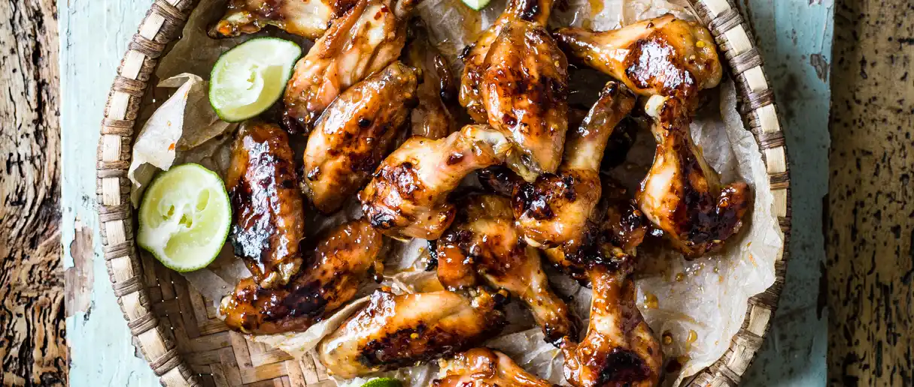

BBQ fish sauce wings
PRICE: R150
This gluten-free chicken wings recipe is super easy to make and a real crowd pleaser at any summer barbecue
Prep time: 35 mins
Serves: 4
Steps
- Whisk all the marinade ingredients in a bowl until the sugar has dissolved.
- Add the chicken wings, coat well and chill for at least 2 hours but preferably overnight.
- Add the chicken wings, coat well and chill for at least 2 hours but preferably overnight.
- Remove the wings and pat dry with kitchen paper. Add the marinade ingredients to a pan and bring to a boil over a medium heat. Simmer for 5-10 minutes until syrupy.
- Heat a barbecue until medium-high (or for oven cooking, see cook’s notes).
- Add the wings to a bowl and toss with 1 tbsp of oil and some seasoning.
- Grill for 20-25 minutes, turning regularly, until really chargrilled and crisp.
- Remove from the barbecue and toss with the reduced marinade. Serve with lime wedges.